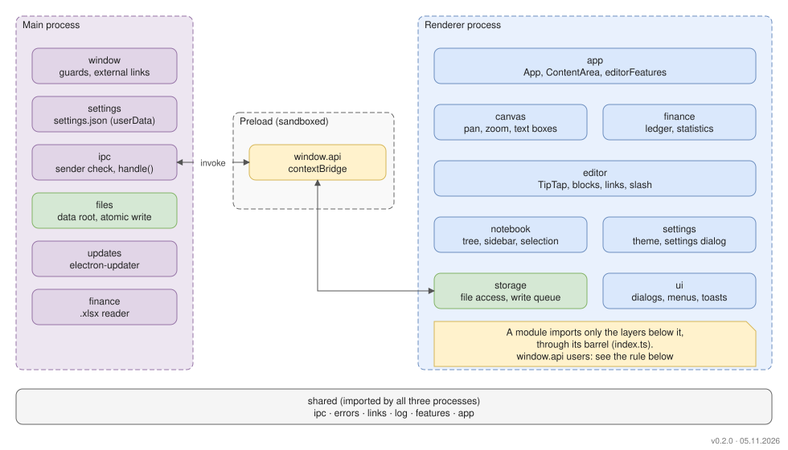

MyNote documentation
A local-first desktop notebook: free-form canvas pages with rich text, slash-command blocks and an optional finance ledger, stored as plain files. Version 0.2.0.
Architecture

Three processes and one shared folder. Details, the allowed imports, the feature flag and the logging levels: architecture.
Module map
| Module | What it holds | Read |
|---|---|---|
main | Data root and file access, atomic write, settings, update check, window guards, .xlsx reader | IPC · files · data root · updates · .xlsx reader |
shared | IPC contract, errors, link rules, logger, feature flag | architecture |
ui | Dialogs, context menu, toasts, escape stack | ui |
storage | Folder-relative file access, write queue, ids, value checks | file format · files |
settings | Theme, settings dialog | updates |
notebook | Notebook tree, store, manifest, sidebar | notebook · data model · content lifecycle |
editor | TipTap setup, feature registry, blocks, slash command, links, toolbar | feature registry · live blocks · table · slash command · links |
canvas | Canvas view, text boxes, viewport, minimap, content store | canvas · coordinate model |
finance | Ledger and statistics blocks, finance store, import and export (optional module) | data files · persistence · import and export · statistics |
app | App shell, content area, error boundary, the list of editor features | architecture |